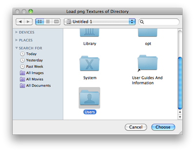

EditorUtility.OpenFolderPanel
public static string OpenFolderPanel(string title,
string folder,
string defaultName);
Description 描述
Displays the "open folder" dialog and returns the selected path name.
See Also: OpenFilePanel, SaveFolderPanel functions.

Open Folder Panel.
using UnityEditor; using System.IO;
public class OpenFolderPanelExample : EditorWindow { [MenuItem("Example/Load Textures To Folder")] static void Apply() { string path = EditorUtility.OpenFolderPanel("Load png Textures", "", ""); string[] files = Directory.GetFiles(path);
foreach (string file in files) if (file.EndsWith(".png")) File.Copy(file, EditorApplication.currentScene); } }